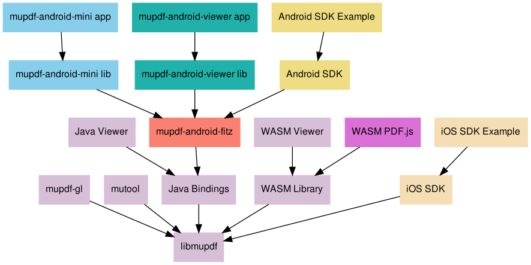

There are many projects, viewers, tools, and libraries based on MuPDF. The following graph shows the official projects developed by Artifex.

- libmupdf
- The C library that is the foundation for everything MuPDF.
- mupdf-gl
- The viewer application for Linux and Windows.
- mupdf-x11
- The original viewer application for Linux and Windows.
- mutool
- The command line tool suite.
- Java Bindings
- The JNI bindings and Java classes that expose a low-level Java API to the MuPDF library.
- Java Desktop Example
- A simple viewer application written in Java. It runs on Mac, Linux, and Windows.
- WASM Library
- A WebAssembly library and simple high-level API.
- WASM Viewer
- A single HTML page web application using the WASM library to display PDF files in the browser.
- WASM PDF.js
- A fork of PDF.js that uses MuPDF as a drop-in replacement for the PDF parser and renderer.
- mupdf-android-fitz
- An Android library that provides the Java bindings for use with Android apps.
- mupdf-android-mini lib and app
- The "MuPDF mini" app that is on Google Play. This basic viewer is designed to be a tutorial and example for how to create an Android app from scratch using the MuPDF library. It can also be used as-is to provide an Activity that can be used to display PDF files in other Android apps.
- mupdf-android-viewer lib and app
- The "MuPDF viewer" app that is on Google Play. This viewer has a more polished UI, but as a result is a lot more complicated and difficult to customize and learn from.
- MuPDF iOS SDK and Example
- A full featured software development kit and example app for iOS.
- MuPDF Android SDK and Example
- A full featured software development kit and example app for Android.